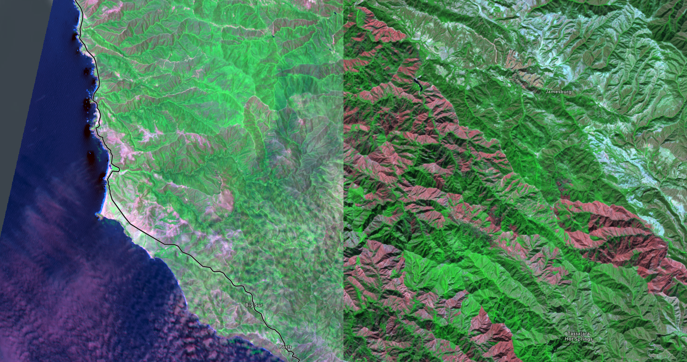
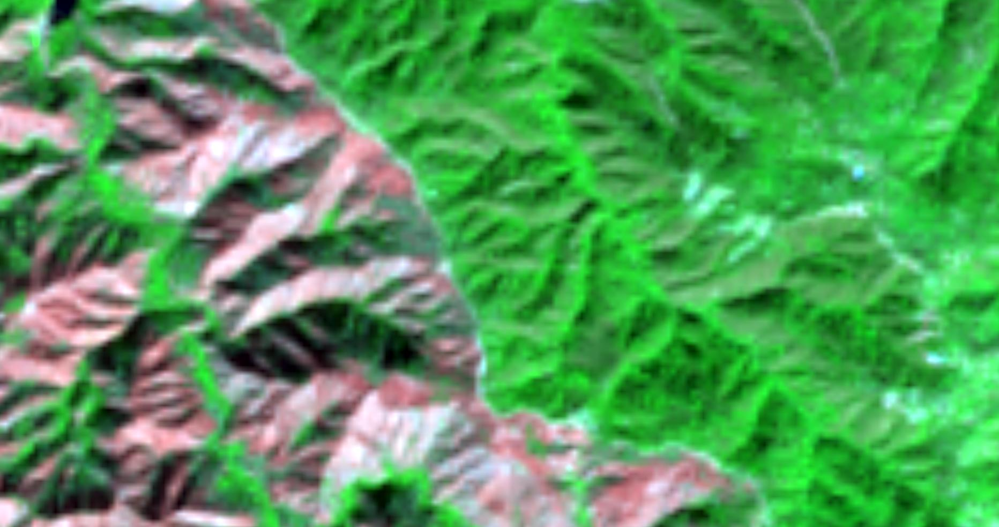
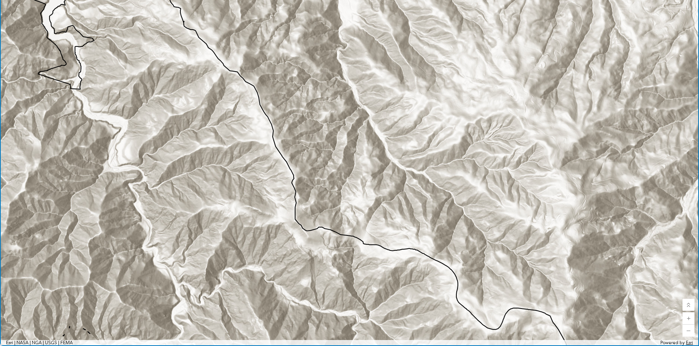
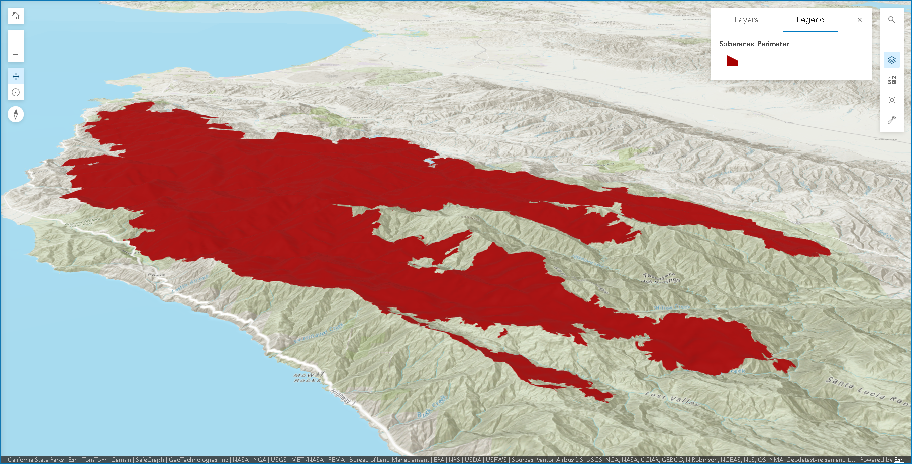

Lab 03 · October 2026
Land Burned in the 2016 Soberanes Fire
The question
How much land was burned in the 2016 Soberanes Fire?
The data
The first dataset is a layer in ArcGIS Online called "Soberanes_Perimeter". It archived the burned area in the 2016 Soberanes Fire and was published in 2017 as a public teaching layer by Esri. It's important to note that the coordinate system of this layer is WGS 84 / Pseudo-Mercator (ESPG:3857) and it is only stated in the layer's service definition instead of the Mapviewer. Also, the burned area is actually consisted of one big polygon and a great number of small polygons. There are 690 polygons in total when the layer is displayed in WGS 84 and 686 polygons are smaller than the cell area (900 m²) that a single pixel of the Landsat satellite's sensor corresponds to.
The second dataset I use is the satellite imagery of the wildfire area captured by the Landsat 8 satellite. The two images I used were captured on June,20 2016 and Oct,26 2016, both rendered in Short-wave infrared (SWIR).
The third dataset, which is the terrain data, comes from the layer named "Terrain3D" published by Esri. Heights in this layer are orthometric (in meters) and are based on multiple sources.
The method
I measured the Soberanes Fire perimeter in three frames. First, I used the Arcade expression below to calculate the polygon's planar area in the source coordinate system (EPSG:3857, Web Mercator) and its geodetic area on the WGS 84 ellipsoid:
var planar = Area($feature, 'square-kilometers');
var globe = AreaGeodetic($feature, 'square-kilometers');
var acres = AreaGeodetic($feature, 'acres');
return 'planar ' + Round(planar, 3) + ' km2'
+ TextFormatting.NewLine
+ 'geodetic ' + Round(globe, 3) + ' km2'
+ TextFormatting.NewLine
+ 'geodetic ' + Round(acres, 0) + ' acres'
+ TextFormatting.NewLine
+ 'ratio ' + Round(planar / globe, 4);The planar area was measured in Web Mercator, while the geodetic area and the hand-traced measurement were measured on the WGS 84 ellipsoid. I used the Elevation Profile tool in Scene Viewer to obtain average slopes across two parts of the burn and calculated the corresponding surface-area factors as 1/cos(slope). I used these factors with the geodetic area to obtain a lower-bound estimate of the ground surface area.
For the height conversion, I used the geoid separation values from the EGM2008 and applied h=H+N to convert ellipsoidal height to orthometric height.




What I found
The burned area I got from different frams:
| Frame | Area (km²) | How you got it |
|---|---|---|
| Web Mercator, planar | 824.323 | Shape__Area, and Area() |
| WGS 84 ellipsoid, geodetic | 534.114 | AreaGeodetic() |
| Your hand-traced polygon | 500.98 | Measurement tool |
| The published incident figure | 534.699 | 132,127 acres, converted by you |
| UTM zone 10N, planar | 533.929 | given, computed for you |
| California Albers, planar | 534.182 | given, computed for you |
Mercator holds angles right by stretching east-west distance until the shrinking circles of latitude are drawn as wide as the equator. So we can actually compute the areal inflation at different latitudes by sec(latitude)²-1:
| Place | Latitude | Web Mercator areal inflation |
|---|---|---|
| Equator | 0.000° | 0.00% |
| Gibson Desert, Western Australia | -23.285° | 18.52% |
| This campus, Pudong | 31.162° | 36.57% |
| Madeira, Portugal | 32.750° | 41.37% |
| Soberanes Fire, California | 36.326° | 54.06% |
| Fairbanks, Alaska | 64.840° | 453.25% |
The data from the satellite sensors is grided and the vector boundary drawn from gridded data cannot be located more precisely than one cell. So the area inside it carries an uncertainty band roughly equal to the perimeter multiplied by the cell size. This table shows the uncertain band size and its share under different sensor cell sizes.
| Sensor | Cell size | Band (km²) | As a share of the area |
|---|---|---|---|
| Sentinel-2 | 10 m | 4.42 | 0.83% |
| Landsat 8-9 | 30 m | 13.26 | 2.48% |
| MODIS | 250 m | 110.49 | 20.68% |
| A coarse global product | 500 m | 220.98 | 41.37% |
In table 1 we got many area sizes from the same burned area under different frames. If I could choose one to publish, I will choose the geodetic area we get from WGS 84 ellipsoid, which is 534.114 km². This is the most accurate number compared to the others in the table. The AreaGeodetic() method compute the layer's area on the WGS 84 ellipsoid, while the Area() method computes the area on a 2D plane, which is the web Mercator projection. So the planner area is inevitablely affected by web Mercator's distortion. From table 2 we know that the areal inflation at the latitude where the fire took place is about 54.06%. Computing the area on the WGS 84 ellipsoid avoids this distortion but it's still not perfect. Different from the ellipsoid's smooth surface, the Earth's surface is irregular, it has bumps like mountains and ranges. The burned area here is the same case. The fire occoured in the Santa Lucia Range, as map 4 shows. So if we consider these rolling terrain, the surface area would be even larger.
What this does not show
In the data part I mentioned that the burned area is consisted of one big polygon and many small polygons and a big proportion of the small polygons are smaller than the cell size of the Landsat 8 satellite's sensor (30m*30m). These small polyones are not observations of anything. They are what is left over when a raster is traced into vectors. They are what is left over when a raster is traced into vectors, caused by the algorithm. These small polygones taks about 0.01% of the total burned area. But they contribute a real share of the stated perimeter. Also, the main ring carries about 22,800 vertices along a 380 km boundary — an average spacing of about 17 m, and more than eighty per cent of its segments are shorter than the 30 m cell that produced them. The polygon records detail the sensor could not have seen, slao caused by the algorithm. Unfortunately, the layer didn't point this out explicitly.
The second thing is that the average slope we get from the Elevation Profile tool in map 4 can only provide a lower bound of the true surface area. Because the relationship between the ratio of the true surface area and it's projection on the plane is not linear. The growing rate of the ratio is faster at a steeper slope. So applying the cosine to an average slope always understates the true surface area. The third thing is that in map 4, the description of the terrain layer didn't state which geoid model it used. The orthometric height at a fixed spot can vary by several meters depending on the geoid model, as the table below shows.
AI use: AI-assisted for html coding, using Claude Code. I verified it by opening the page on a phone and a laptop and confirming no external resources were added. The analysis, the parameter choices and the interpretation are my own.